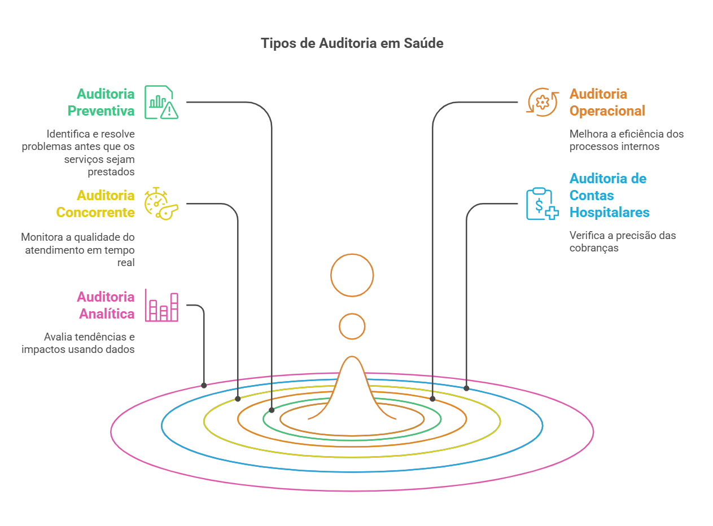

Controle de Produção e Auditoria
A auditoria em saúde é essencial para garantir a qualidade, transparência e eficiência dos serviços prestados. Esse processo avalia se os procedimentos seguem as normas e regulamentações, ajudando a prevenir erros, desperdícios e fraudes.

O que é Auditoria em Saúde?
A auditoria em saúde avalia e monitora os processos hospitalares, garantindo que estejam de acordo com os padrões exigidos pelo SUS e demais órgãos reguladores.
✅ Objetivos:
- Melhorar a qualidade dos serviços prestados.
- Reduzir desperdícios e otimizar custos hospitalares.
- Identificar falhas e oportunidades de melhoria.
- Garantir conformidade com normas e regulamentos.
✅ Execução:
- Interna → Feita pela própria instituição de saúde.
- Externa → Conduzida por órgãos fiscalizadores ou consultorias independentes.
Dica
Auditorias não devem ser encaradas como punição, mas como uma ferramenta estratégica para melhorar a gestão hospitalar.
Tipos de Auditoria
A auditoria pode ser realizada de diversas formas, dependendo do objetivo e momento da aplicação.
Auditoria Preventiva
📌 Objetivo: Identificar falhas antes da prestação do serviço.
💡 Exemplo: Avaliação de um novo fornecedor antes da aquisição de insumos médicos.
Auditoria Operacional
📌 Objetivo: Melhorar eficiência e produtividade hospitalar.
💡 Exemplo: Revisão do fluxo de estoque de medicamentos.
Auditoria Concorrente
📌 Objetivo: Monitoramento em tempo real dos serviços prestados.
💡 Exemplo: Observação do atendimento no pronto-socorro.
Auditoria de Contas Hospitalares
📌 Objetivo: Revisar cobranças e evitar desperdícios financeiros.
💡 Exemplo: Análise detalhada de faturas e AIHs para evitar glosas.
Auditoria Analítica
📌 Objetivo: Utilizar dados e estatísticas para prever tendências.
💡 Exemplo: Avaliação do impacto de uma campanha de vacinação.
Benefícios da Auditoria em Saúde
- Qualidade e Segurança → Identifica falhas e propõe melhorias no atendimento ao paciente.
- Redução de Custos → Evita desperdícios e otimiza o uso dos recursos hospitalares.
- Conformidade com Regulamentações → Garante que a instituição siga as normas do SUS.
- Transparência e Prestação de Contas → Evita fraudes e melhora a governança hospitalar.
Importante
A auditoria ajuda não apenas na gestão financeira, mas também na segurança do paciente.
Desafios na Implementação da Auditoria
Resistência dos Colaboradores
- Alguns profissionais podem enxergar a auditoria como algo punitivo.
- Solução: Educação e sensibilização para demonstrar os benefícios do processo.
Falta de Padronização
- A ausência de protocolos bem definidos pode gerar inconsistências.
- Solução: Implementar normas e checklists claros para todos os setores.
Recursos Limitados
- Auditorias exigem tempo, capacitação e tecnologia.
- Solução: Uso de sistemas automatizados e capacitação da equipe.
Tecnologia e Inovação na Auditoria: DRG Brasil
O DRG (Diagnosis-Related Groups) é uma ferramenta que classifica pacientes hospitalizados de acordo com a complexidade do caso e recursos utilizados.
✅ Benefícios do DRG:
- Comparação entre hospitais e regiões, avaliando eficiência e custos.
- Identificação de desperdícios e melhorias no faturamento hospitalar.
- Análises preditivas para otimizar os serviços de saúde.
Dica de Melhoria
O uso de DRG Brasil pode aumentar a eficiência da auditoria e otimizar os gastos hospitalares.
Relatórios e Documentação na Auditoria
✅ Documentos Essenciais:
- Relatório de Auditoria → Resumo detalhado das não conformidades e recomendações.
- Checklist de Inspeção → Ferramenta padronizada para avaliar processos hospitalares.
- Espelho da AIH → Documento essencial para auditorias no faturamento do SUS.
Atenção
Documentação incompleta pode comprometer a eficácia da auditoria e gerar glosas nos faturamentos.
Conclusão
A auditoria em saúde não é apenas um processo burocrático: ela é fundamental para a qualidade assistencial e a eficiência dos hospitais. Com uma abordagem tecnológica e estratégica, as auditorias podem transformar a gestão hospitalar, garantindo mais segurança, economia e transparência.